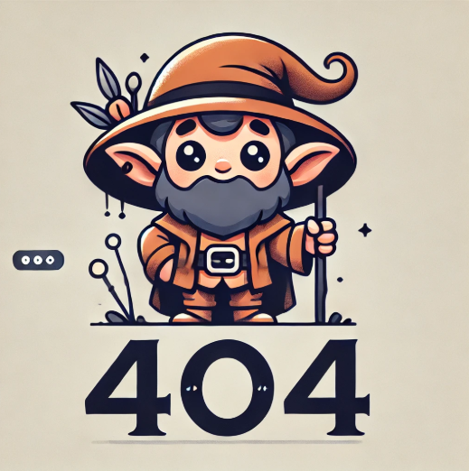

Astronomi ve TÜBİTAK Projeleri
Astronomi, evrenin derinliklerini keşfetmeye yönelik yapılan bilimsel araştırmalardır. TÜBİTAK, bu alanda yürütülen projelere büyük destek sağlamaktadır. Özellikle, teleskopların geliştirilmesi ve uzay gözlemleri gibi projeler, Türk astronomisinin uluslararası alandaki gücünü arttırmaktadır. TÜBİTAK, ayrıca genç araştırmacılara yönelik astronomi yarışmaları ve projeleriyle bilimsel keşiflere katkıda bulunmaktadır.
Uzay Keşifleri ve TÜBİTAK
Uzay keşifleri, insanlığın sınırlarını zorladığı bir alandır. TÜBİTAK, uzay araştırmalarına yönelik projelerde yer alan ve ulusal uzay programlarına katkı sağlayan önemli bir kuruluştur. Uzay teknolojileri, roket mühendisliği, uzayda yaşam araştırmaları ve diğer uzay keşif projeleri TÜBİTAK’ın öncelikli çalışma alanlarından biridir. Ayrıca, TÜBİTAK, yerli uydu projeleri ve uzay araştırma istasyonları konusunda da önemli çalışmalar yürütmektedir.